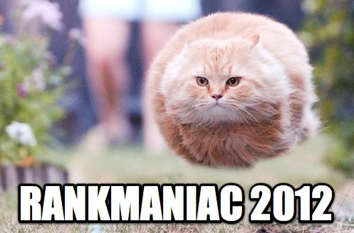

rankmaniac 2012 index increase whod users

Readers of your article will see that you know what youre talking rankmaniac 2012 about and because youre published theyll see you as an authority. Youll find web traffic and requests for quotes increase after every article. Heres how article PR works STEP 1 Youre an expert in your field so you possess knowledge that other people want. STEP 2 You write a helpful article sharing your hardearned knowledge and expertise without compromising your income stream. STEP 3 You submit your article to recognized and highly trafficked Article Submit sites on the World Wide Web. STEP 4 Publishers of online newsletters ezines etc. gather content from these sites rankmaniac 2012 for free. STEP 5 Helpful well written articles are snapped up by thousands of publishers from all around the world in virtually every industry. STEP 6 The only condition is that they must publish the article with a functioning link to your site. STEP 7 If 300 people publish your article you get 300 links back to your site. And the best part is that every link is relevant and you even get to choose the link text SEO Secrets V1.3 Copyright Divine Write Copywriting Pty Ltd 30 Step 5 Generate links back to your site 30 Article PR FAQs Below are some FAQs that will help you write your articles and manage your article PR campaign. Q What should I write about A rankmaniac 2012 Write about what you know. Make sure its related to your business so you can use the keywords you want to rank for and helpful so it gets published. For example if youre a manufacturer of industrial plastics you might write an article or series of articles on how best to handle Teflon tubing prior to installation. Once you get thinking about it youll probably find there are hundreds of articles you could write that are helpful. You may even have some of them partly written  already in your instruction manuals or installation guides etc. Another good idea is to think of all the questions you get asked by customers and potential customers. These questions show you what people are interested in. If you write an article answering every one of these rankmaniac 2012 questions youll get published and youll also show yourself to be a credible expert. You may even cut down phone rankmaniac 2012 support time Q How long should my article be A The best articles are only as long as they need to be. Keep it short and sweet theres nothing wrong with a 400 word article. By the same token if you need 1500 words to say all you need to say thats fine as well but Id still be thinking about how to break that into three parts and get three times as many links. Q How often to submit A Whenever you write an article. Q What kind of writing should I use A Simply write in a style that your audience will be comfortable with. If theyre from the old school dont write like I am. Dont use contractions dont end sentences with prepositions and dont start sentences with and or but. But if theyre not old school just use conversational English. In fact the more of yourself you rankmaniac 2012 include in the article the more engaging it will be. The key is to make it readable. Q Should I focus on keywords A Yes Yes Yes Optimize your articles just as you optimize your website. In fact as youll probably post the articles on your website youre really are writing for
already in your instruction manuals or installation guides etc. Another good idea is to think of all the questions you get asked by customers and potential customers. These questions show you what people are interested in. If you write an article answering every one of these rankmaniac 2012 questions youll get published and youll also show yourself to be a credible expert. You may even cut down phone rankmaniac 2012 support time Q How long should my article be A The best articles are only as long as they need to be. Keep it short and sweet theres nothing wrong with a 400 word article. By the same token if you need 1500 words to say all you need to say thats fine as well but Id still be thinking about how to break that into three parts and get three times as many links. Q How often to submit A Whenever you write an article. Q What kind of writing should I use A Simply write in a style that your audience will be comfortable with. If theyre from the old school dont write like I am. Dont use contractions dont end sentences with prepositions and dont start sentences with and or but. But if theyre not old school just use conversational English. In fact the more of yourself you rankmaniac 2012 include in the article the more engaging it will be. The key is to make it readable. Q Should I focus on keywords A Yes Yes Yes Optimize your articles just as you optimize your website. In fact as youll probably post the articles on your website youre really are writing for  your website anyway. If possible turn a few keywords into links back to your site. And always try to include keywords in the headline and byline of your article. And dont worry about being seen as Spam if your article provides good quality information and guidance it wont be seen as spam by the search engines even when its keywordrich. Q Do I need to vary the byline A There is some evidence to suggest that the search engines prefer varied link text in links back to your site otherwise they may view the links as artificially generated i.e. SPAM. Therefore its probably a good idea to vary at least the link text of your byline without departing from your keywords. SEO Secrets V1.3 Copyright Divine Write Copywriting Pty Ltd 31 Step 5 Generate links back to your site 31 Q Should I always use the byline to link to my home page or should I also rankmaniac 2012 link to other pages A Link back to whatever page matches the keywords used in your article. If your website only targets one keyword simply link back to your home page. Q Where should I submit my article A There are hundreds if not thousands of article submission sites and article distribution lists on the World Wide Web. Too many to include here. Do a search for article submit and just find the ones that are most applicable to your industry and offer the most subscribers. Q How long does it take to
your website anyway. If possible turn a few keywords into links back to your site. And always try to include keywords in the headline and byline of your article. And dont worry about being seen as Spam if your article provides good quality information and guidance it wont be seen as spam by the search engines even when its keywordrich. Q Do I need to vary the byline A There is some evidence to suggest that the search engines prefer varied link text in links back to your site otherwise they may view the links as artificially generated i.e. SPAM. Therefore its probably a good idea to vary at least the link text of your byline without departing from your keywords. SEO Secrets V1.3 Copyright Divine Write Copywriting Pty Ltd 31 Step 5 Generate links back to your site 31 Q Should I always use the byline to link to my home page or should I also rankmaniac 2012 link to other pages A Link back to whatever page matches the keywords used in your article. If your website only targets one keyword simply link back to your home page. Q Where should I submit my article A There are hundreds if not thousands of article submission sites and article distribution lists on the World Wide Web. Too many to include here. Do a search for article submit and just find the ones that are most applicable to your industry and offer the most subscribers. Q How long does it take to  submit a single article A It all depends on how many sites you submit it to. I allow a full day to submit a single article to the 50 submission sites in my list. Admittedly Ive been doing it for a while so Im fairly fast at it but its not a difficult task. Once youve done it a couple of times
submit a single article A It all depends on how many sites you submit it to. I allow a full day to submit a single article to the 50 submission sites in my list. Admittedly Ive been doing it for a while so Im fairly fast at it but its not a difficult task. Once youve done it a couple of times  youll have it down to a fine art. You just have to work hard and efficiently when you do it. Q Who will publish my article A Generally people publish prewritten articles because they want eyes on paper. In other words they want to generate traffic to their site. Helpful articles are one way rankmaniac 2012 of doing that because theyre keywordrich and rankmaniac 2012 they enhance the publishers search engine ranking. Expert helpful articles also make the publisher seem like a credible authority on a particular subject. And of course they develop customer loyalty. There are hundreds of thousands maybe even millions of companies publishing online newsletters ezines and article pages. No rankmaniac 2012 matter what your industry youre bound to find quite a few who are interested in what you have to say. In fact once a few publishers recognize you as a good source of content they keep coming back rankmaniac 2012 looking for more and even email you asking if you can send them directly. Q How will I know when my article has been published A As one of the conditions of publication you can request that the publisher notifies you when they use your article. Of course most dont bother to do this so its a good idea to set up a Google Alert httpwww.google.comalerts which notifies you when your URL has been published on a web page. Google doesnt pick them all up but it picks up rankmaniac 2012 a lot. rankmaniac 2012 Whenever you rankmaniac 2012 receive rankmaniac 2012 an alert you rankmaniac 2012 can visit the page to make sure the article is unchanged and the link back to your site is functioning. Q How much crosspublication of a single article is acceptable A It doesnt matter. I have some articles that have been published on many different websites probably hundreds. These articles still get good coverage on reputable sites with good PR. Q Will the rankmaniac 2012 publisher change my article A No generally not. Changing articles is just extra work. In fact thats why publishers like good articles and consistent content providers because that means they dont have to do any extra work. Ive had my articles published thousands of times and dont recall a single instance of an article being changed without my permission. If youre worried about it rankmaniac 2012 rankmaniac 2012 you can include an instruction not to change the article in your conditions of publication. SEO Secrets V1.3 Copyright Divine Write Copywriting Pty Ltd 32 Step 5 Generate links back to your site 32 Q Should I post my article on my website A Yes Articles are solid keywordrich content. Search engines and visitors alike love them. Add a new page for every article and link to each from a top level rankmaniac 2012 articles page see httpwww.divinewrite.comarticles.htm for a working example. Q Can I rankmaniac 2012 get an SEO copywriter to do my article PR A Yes. Any SEO copywriter rankmaniac 2012 should be able to write keyword rich articles and submit them to a number of high traffic article submission sites. Q What kind of information would I need to supply an SEO copywriter to write rankmaniac 2012 my article A Youd need to rankmaniac 2012 tell your SEO copywriter something like We want to rankmaniac 2012 write an article which helps people install Teflon tubing. The kinds of people whod be doing it are... Theyd be doing it because... The benefits of our tubing are... The difficulties theyd face are... Here are the key steps to successful installation... Using this information your SEO copywriter should be able to put together a very readable rankmaniac 2012 article which would be bound to get published. rankmaniac 2012 Q Will my reputation suffer if my article appears on a dubious site A It shouldnt. Most dubious sites will either be unrelated or have very low traffic. If the site is unrelated the publisher wont go to the effort of publishing your article andor your target market wont see it. If its related but has very low traffic very few people will see your article there anyway. And besides even if your article appears on a dubious site it probably wont be changed because dubious or not publishers dont create extra work for themselves. So your original presentation content and intent will be unaffected. Write a good article and it rankmaniac 2012 always reflects well on you no matter where its published. Q How long will it take for my ranking to increase A There are no guarantees in SEO. It all takes time. For a start the search engines can take up to 2 months to update their index of pages. And a single inbound link generally wont have much impact. Depending on how much competition youre facing for keywords and where the links are coming from 100 inbound links may not make much of a difference. Links from high rankmaniac 2012 PageRank sites are more beneficial to your ranking. So dont expect anything to happen too quickly. rankmaniac 2012 But if youre dedicated and youre prepared to write and submit quite a few articles youll definitely see results within a few months. Submit your site to local and industry directories Another marginally useful method of generating links is to submit your site to online local directories and
youll have it down to a fine art. You just have to work hard and efficiently when you do it. Q Who will publish my article A Generally people publish prewritten articles because they want eyes on paper. In other words they want to generate traffic to their site. Helpful articles are one way rankmaniac 2012 of doing that because theyre keywordrich and rankmaniac 2012 they enhance the publishers search engine ranking. Expert helpful articles also make the publisher seem like a credible authority on a particular subject. And of course they develop customer loyalty. There are hundreds of thousands maybe even millions of companies publishing online newsletters ezines and article pages. No rankmaniac 2012 matter what your industry youre bound to find quite a few who are interested in what you have to say. In fact once a few publishers recognize you as a good source of content they keep coming back rankmaniac 2012 looking for more and even email you asking if you can send them directly. Q How will I know when my article has been published A As one of the conditions of publication you can request that the publisher notifies you when they use your article. Of course most dont bother to do this so its a good idea to set up a Google Alert httpwww.google.comalerts which notifies you when your URL has been published on a web page. Google doesnt pick them all up but it picks up rankmaniac 2012 a lot. rankmaniac 2012 Whenever you rankmaniac 2012 receive rankmaniac 2012 an alert you rankmaniac 2012 can visit the page to make sure the article is unchanged and the link back to your site is functioning. Q How much crosspublication of a single article is acceptable A It doesnt matter. I have some articles that have been published on many different websites probably hundreds. These articles still get good coverage on reputable sites with good PR. Q Will the rankmaniac 2012 publisher change my article A No generally not. Changing articles is just extra work. In fact thats why publishers like good articles and consistent content providers because that means they dont have to do any extra work. Ive had my articles published thousands of times and dont recall a single instance of an article being changed without my permission. If youre worried about it rankmaniac 2012 rankmaniac 2012 you can include an instruction not to change the article in your conditions of publication. SEO Secrets V1.3 Copyright Divine Write Copywriting Pty Ltd 32 Step 5 Generate links back to your site 32 Q Should I post my article on my website A Yes Articles are solid keywordrich content. Search engines and visitors alike love them. Add a new page for every article and link to each from a top level rankmaniac 2012 articles page see httpwww.divinewrite.comarticles.htm for a working example. Q Can I rankmaniac 2012 get an SEO copywriter to do my article PR A Yes. Any SEO copywriter rankmaniac 2012 should be able to write keyword rich articles and submit them to a number of high traffic article submission sites. Q What kind of information would I need to supply an SEO copywriter to write rankmaniac 2012 my article A Youd need to rankmaniac 2012 tell your SEO copywriter something like We want to rankmaniac 2012 write an article which helps people install Teflon tubing. The kinds of people whod be doing it are... Theyd be doing it because... The benefits of our tubing are... The difficulties theyd face are... Here are the key steps to successful installation... Using this information your SEO copywriter should be able to put together a very readable rankmaniac 2012 article which would be bound to get published. rankmaniac 2012 Q Will my reputation suffer if my article appears on a dubious site A It shouldnt. Most dubious sites will either be unrelated or have very low traffic. If the site is unrelated the publisher wont go to the effort of publishing your article andor your target market wont see it. If its related but has very low traffic very few people will see your article there anyway. And besides even if your article appears on a dubious site it probably wont be changed because dubious or not publishers dont create extra work for themselves. So your original presentation content and intent will be unaffected. Write a good article and it rankmaniac 2012 always reflects well on you no matter where its published. Q How long will it take for my ranking to increase A There are no guarantees in SEO. It all takes time. For a start the search engines can take up to 2 months to update their index of pages. And a single inbound link generally wont have much impact. Depending on how much competition youre facing for keywords and where the links are coming from 100 inbound links may not make much of a difference. Links from high rankmaniac 2012 PageRank sites are more beneficial to your ranking. So dont expect anything to happen too quickly. rankmaniac 2012 But if youre dedicated and youre prepared to write and submit quite a few articles youll definitely see results within a few months. Submit your site to local and industry directories Another marginally useful method of generating links is to submit your site to online local directories and